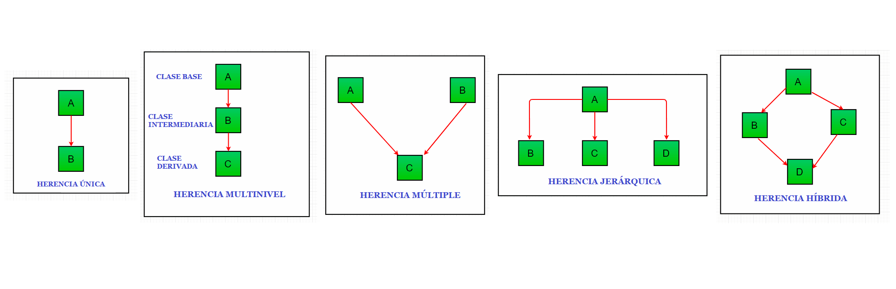

CURSO JAVA

Herencia en Java
La herencia es un pilar importante de OOP (Programación Orientada a Objetos). Es el mecanismo en Java por el cual una clase permite heredar las características (atributos y métodos) de otra clase. Aprenda más a continuación.
En el lenguaje de Java, una clase que se hereda se denomina superclase. La clase que hereda se llama subclase. Por lo tanto, una subclase es una versión especializada de una superclase. Hereda todas las variables y métodos definidos por la superclase y agrega sus propios elementos únicos.
Terminología importante.
⚫Reutilización: la herencia respalda el concepto de “reutilización”, es decir, cuando queremos crear una clase nueva y ya hay una clase que incluye parte del código que queremos, podemos derivar nuestra nueva clase de la clase existente. Al hacer esto, estamos reutilizando los campos/atributos y métodos de la clase existente.
¿Qué es Herencia?
Podemos definir la herencia como la capacidad de crear clases que adquieren de manera automática los miembros (atributos y métodos) de otras clases que ya existen, pudiendo al mismo tiempo añadir atributos y métodos propios.
Ventajas de la Herencia
Tipos De Herencia En Java

Ejemplo de cómo usar la herencia en Java
La palabra clave utilizada para la herencia es extends
Ejemplo: Comencemos con un breve ejemplo que ilustra varias de las características clave de la herencia. El siguiente programa crea una superclase llamada DosDimensiones, que almacena el ancho y la altura de un objeto bidimensional, y una subclase llamada Triangulo. Observe cómo se usa la palabra clave extends para crear una subclase.


Su salida será:

Nota: En el programa anterior, cuando se crea un objeto de clase Triangulo, una copia de todos los métodos y campos de la superclase adquiere memoria en este objeto. Es por eso que, al usar el objeto de la subclase, también podemos acceder a los miembros de una superclase.
Tenga en cuenta que durante la herencia solo se crea el objeto de la subclase, no de la superclase.
Contenido multimedia